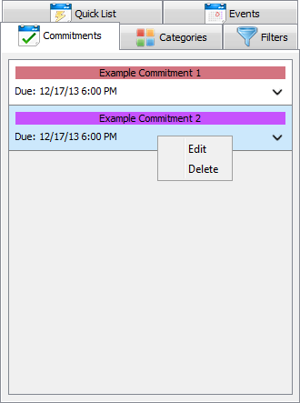

Commitments represent deadlines. Commitments have a due date and time, but not a start date or time. Commitments also have names, categories, and descriptions. Commitments have their own list panel in Janeway which lists all of the commitments. A user can double click on a commitment to open a detail view. In the detail view, the user is given the option to either edit the commitment or return to the list view. Should the user choose to edit a commitment, a new tab will open. The user can then change the details of the commitment and save it.
In order to add a commitment, first locate and click on the New Commitment Button.
A new tab will appear. Enter the appropriate information in each of the fields and press
the Add Commitment button.
The new commitment will appear on the calendar and in the Commitment List Panel.
To edit a commitment, first locate the commitment on the Commitment List Panel.
Right click on the commitment.

This brings up a small context menu. Choose the edit button.
Once the edit commitment button has been pressed, a new tab will appear. The fields
will populate with the current details about the commitment. Edit the desired fields and
press the Update Commitment button. This will close the tab and bring you back to
the standard view.
To delete a commitment, first locate the commitment on the Commitment List Panel.
Highlight the commitment by clicking on it.
Once the commitment is highlighted, locate the Delete Commitment button. Press this
button to delete the commitment.
Multiple commitments can be deleted at a time. To delete multiple commitments,
first select all of the commitments to be deleted. To select multiple commitments,
hold the Ctrl/command key and click on the desired commitments.
Once the commitments are highlighted, locate the Delete Commitment button.
Press this button to delete the commitments.